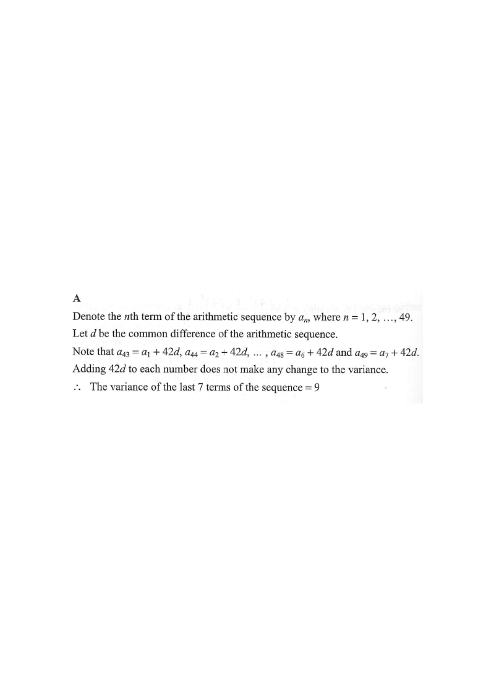

There are 49 terms in an arithmetic sequence. If the variance of the first 7 terms
of the sequence is $9$, then the variance of the last 7 terms of the sequence is
A. $9$.
B. $18$.
C. $49$.
D. $81$.

Figure (original exam diagram)
Step-by-step Solution
STEP 1
Denote the $n$th term by $a_n$ for $n=1,2,\dots,49$, and let $d$ be the common difference:
$$a_n = a_1 + (n-1)d .$$
Hint: Write every term in terms of the very first term $a_1$. The number of terms (49) and the common difference $d$ describe everything.
nth Term of an Arithmetic Sequence\(a_{n}=a_{1}+(n-1)d\)The \(n\)-th term is written with the first term and the common difference \(d\), so \(a_{42+k}=a_{k}+42d\).
STEP 2
Pair each term of the last 7 with the corresponding term of the first 7.
Note that $a_{43}=a_1+42d$, so
$$a_{43}-a_1 = 42d,\quad a_{44}-a_2 = 42d,\ \dots,\ a_{49}-a_7 = 42d .$$
In general, $a_{42+k}=a_k+42d$ for $k=1,\dots,7$.
Hint: $43-1=42$, and the gap is the same for every pair — each last term is exactly $42d$ above its partner.
STEP 3
Adding the same constant $42d$ to every value does not change the spread.
For $k=1,\dots,7$,
$$a_{42+k}=a_k+42d ,$$
so the last 7 terms are just the first 7 terms shifted by $42d$.
Hence their mean is also shifted by $42d$, and each deviation from the mean is unchanged:
$$a_{42+k}-\bar{a}_{\text{last}} = a_k-\bar{a}_{\text{first}} .$$
Hint: A horizontal translation of data leaves the variance untouched — only the differences between values matter.
Invariance of Variance under Translation\(\text{Var}(X+c)=\text{Var}(X)\)Adding the same \(42d\) to all seven values shifts the mean but leaves every deviation unchanged.
STEP 4
Therefore the variance of the last 7 terms equals the variance of the first 7 terms:
$$\text{Variance of last 7} = \text{Variance of first 7} = 9 .$$
Hint: Same spread ⇒ same variance. The shift $42d$ is irrelevant to the variance.
Answer: A. $9$.
PRACTICESimilar question — try it yourself
Question. The first \(8\) terms of an arithmetic sequence are \(5,\ 9,\ 13,\ \dots,\ 33\). The sequence has \(30\) terms in total. Find the variance of the last \(8\) terms of the sequence. A. \(84\) B. \(336\) C. \(672\) D. \(1848\)
Show the worked solution
Step 1. The common difference is \(d=4\). The first \(8\) terms are \(5,9,13,17,21,25,29,33\), with mean \(\dfrac{5+33}{2}=19\).
Step 2. Variance of the first \(8\) terms: \(\dfrac{2\left(14^{2}+10^{2}+6^{2}+2^{2}\right)}{8}=\dfrac{2(196+100+36+4)}{8}=\dfrac{672}{8}=84\).
Step 3. The last \(8\) terms are \(a_{23},\dots,a_{30}\), i.e. \(a_{1}+22d,\dots,a_{8}+22d\) — the first \(8\) terms shifted by the constant \(22d\).
Step 4. A translation does not change the variance, so the required variance is \(84\), i.e. option A.